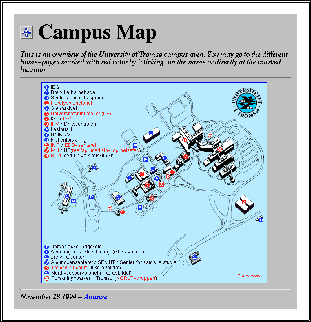

Imagemap er fint og effektivt å bruke for å tilby leseren intuitive navigasjonsmekanismer som manifisteres grafisk. Spesielt effektivt er det hvis selve bildet som benyttes i seg selv er en bærer av informasjon innenfor konteksten det benyttes.
Et eksempel på fornuftig bruk av et imagemap, kan være der man presenterer et geografisk kart over et større eller mindre område og kopler de enkelte områdene i kartet til mer informasjon om området. Samtidig fungerer kartet som et normalt kart, det kan f.eks. skrives ut.
Se f.eks. hva Universitetet i Tromsø har gjort når det gjelder å presentere et kart over campus. Dette er også vist i figur 8.

En ting man alltid må vurdere å tenke på når man bruker grafikk på Web sider, er om man skal ta hensyn til at det fortsatt er mange lesere som bruker browsere uten grafiske muligheter, f.eks. UNIX browseren lynx.
Bruker man bare et vanlig bilde, evt. som en link, går det enkelt an å bruke alt opsjonen til <img> tagen for å spesifisere tekst som skal brukes når man operer i tekstmodus fra en browser.
Dette hjelper lite i et imagemap, siden det alltid skjuler seg mange linker videre bak de fleste imagemaps. Man må i så fall vurdere å legge opp en normal tekstlink som nærmest presenterer mulighetene i form av en meny (dette burde forøvrig være ting som kløktige programmerere greier å implementere slik at en slik meny lages ut fra det som står i konfigurasjonsfilen).
Et eksempel på et slikt tekstlig alternativ kan f.eks. være Time Warners hjemmeside på Internet. Dette er også vist i figur 9.

Figur 9: Time Warners Pathfinder - god bruk av imagemaps